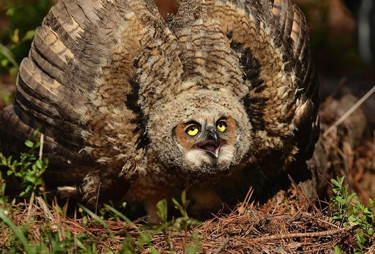
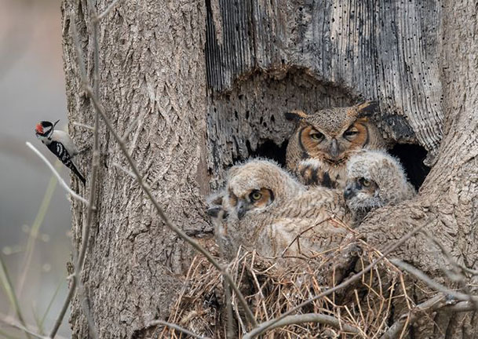
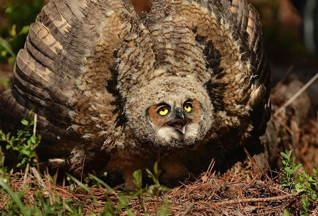
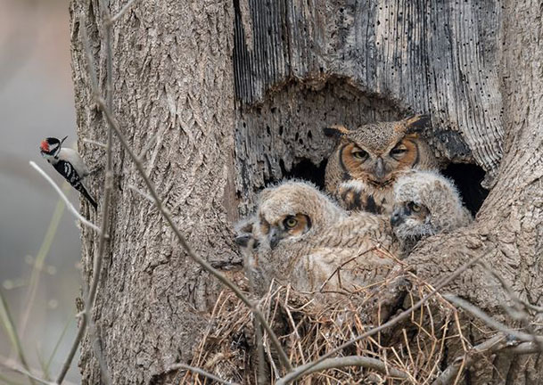

About
 



The great horned owl is the most common owl of the Americas, easily recognizable because of the feather tufts on its head. These “plumicorns” resemble horns or, to some, catlike ears.
Habitat
Great horned owls are adaptable birds and live from the Arctic to South America. They are at home in suburbia as well as in woods and farmlands. Northern populations migrate in winter, but most live permanently in more temperate climes.
Parenting
The birds nest in tree holes, stumps, caves, or in the abandoned nests of other large birds. Monogamous pairs have one to five eggs (two is typical), both the male and female incubate, and the male also hunts for food. Owls are powerful birds and fiercely protective parents. They have even been known to attack humans who wander too close to their young.
Feeding and Hunting
Like other owls, these birds have an incredible digestive system. They sometimes swallow their prey whole and later regurgitate pellets composed of bone, fur, and the other unwanted parts of their meal. Owls are efficient nighttime hunters that strike from above, and use their powerful talons to kill and carry animals several times heavier than themselves. Owls prey on a huge variety of creatures, including raccoons, rabbits, squirrels, domestic birds, falcons, and other owls. They regularly eat skunks, and may be the only animal with such an appetite. They sometimes hunt for smaller game by standing or walking along the ground. Owls have even been known to prey upon unlucky cats and dogs.
Vocalizations
Great horned owls are largely nocturnal so they can be difficult to spot. But in the dark after sunset, or just before dawn, they can often be heard vocalizing with their well known series of “Hoo H'hoos!”